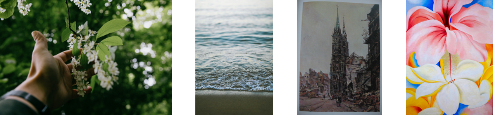
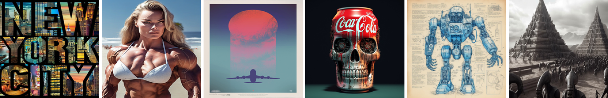
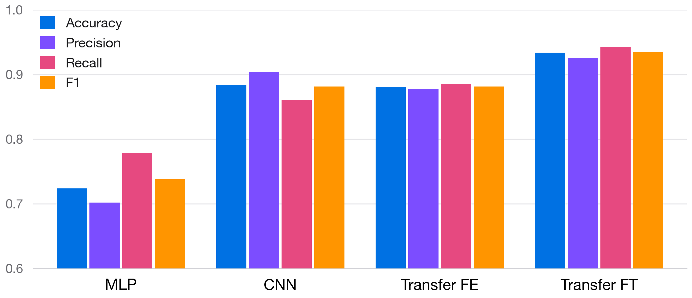
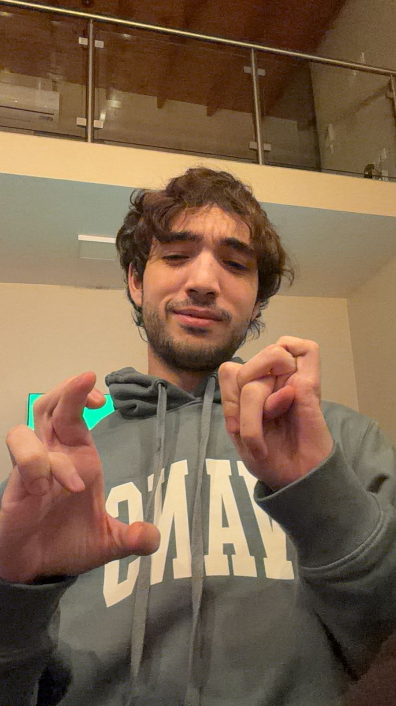
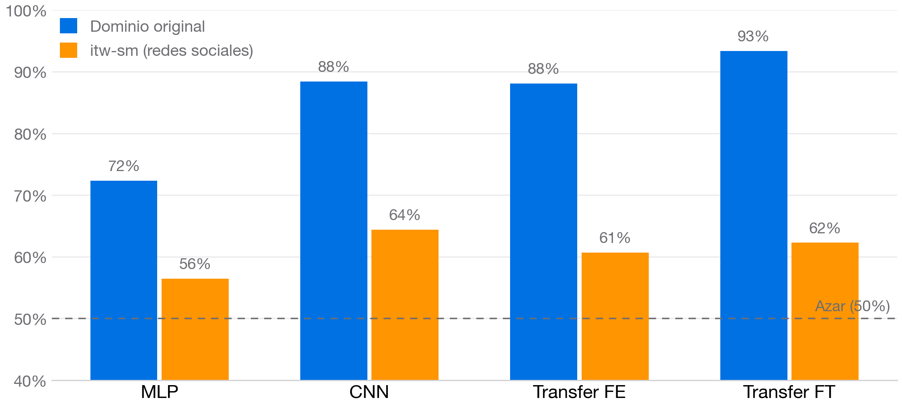
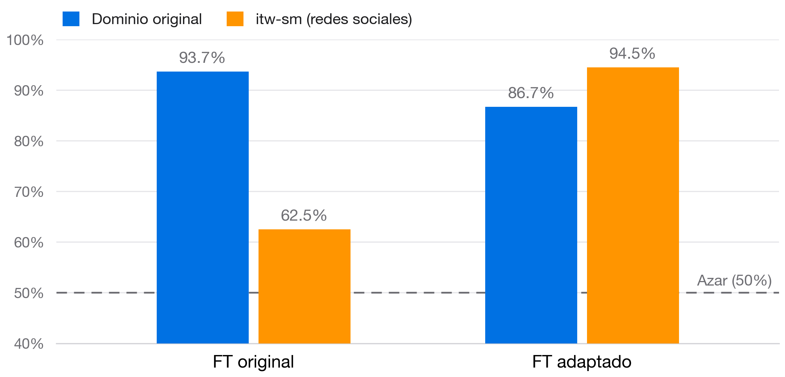
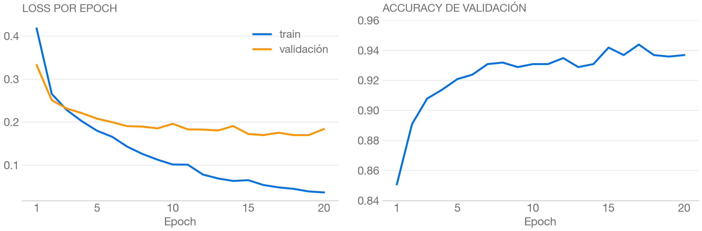

Los generadores de imágenes (Stable Diffusion, DALL-E, Midjourney) producen resultados cada vez más fotorrealistas, con impacto directo sobre la desinformación.


Entrenados con BCEWithLogitsLoss, Adam y early stopping sobre la loss de validación.
| Modelo | Accuracy | F1 |
|---|---|---|
| MLP + PCA | 0.724 | 0.738 |
| CNN desde cero | 0.884 | 0.882 |
| ResNet50 FE | 0.881 | 0.881 |
| ResNet50 FT | 0.934 | 0.934 |

Una selfie real es clasificada como generada por IA por tres de los cuatro modelos:

Evaluados sobre 1.000 imágenes de itw-sm, los cuatro modelos caen cerca del azar: la limitación no es de la arquitectura sino del dominio de entrenamiento (las imágenes “reales” vistas en train son solo paisajes y arte).

Partiendo del modelo FT, se continúa el entrenamiento sobre itw-sm con learning rate 10-5: el modelo incorpora el dominio nuevo modificando mínimamente sus pesos.

